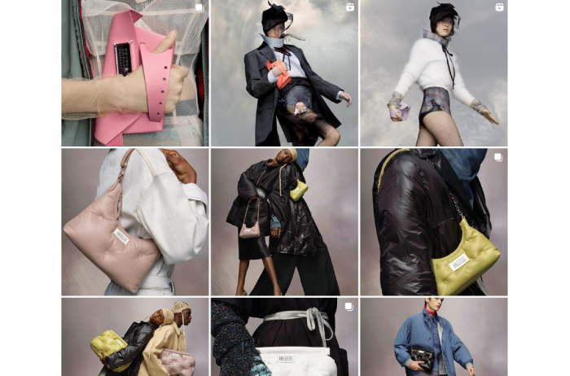
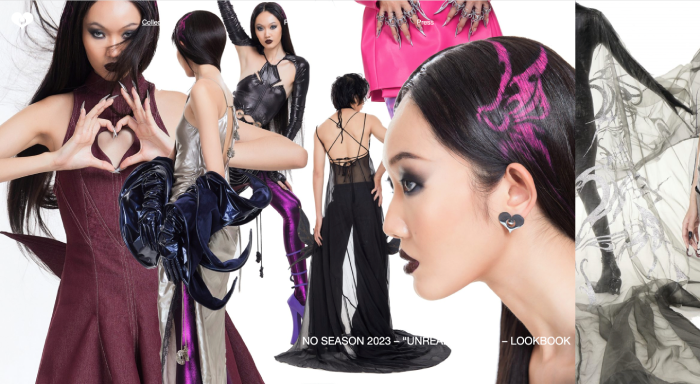
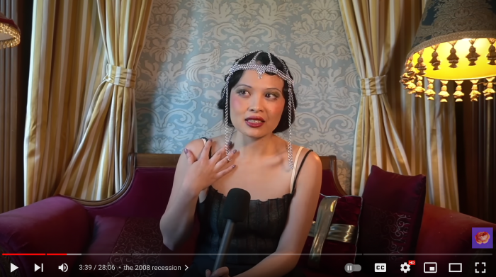

Hi! I'm Kim Nguyen
these are some creatives that inspire me
Martin Margiela
Margiela really speaks to me as a designer
because he was known for deconstructing and reinventing
classic silhouettes along with going against the exclusivity
of high fashion. His brand also has very unique
identifiers that they continue to use as motifs even after
Margiela's retirement.

Quách Đắc Thắng
Thắng is a designer that inspires me because he is a
small designer from Vietnam that is creating spectacular
pieces without a large following. He also has a great blend
of trendy ready to wear that is accessible to the everyday
consumer while also having a catalog of insane made to order
couture.

Mina Le
Mina Le is my favorite youtube video essayist. She
creates content delving into pop culture phenomena and
fashion trends through history. I adore her aesthetic,
and even though she is so clearly inspired by 1920s fashion,
her content is still modern and enjoyable for the average
consumer.
